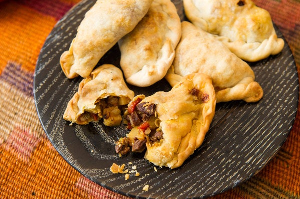

Empanadas

Many cultures have put a spin on the empanada. This recipe descends from the Argentine way of making these little meat pies. The Argentine empanada is small, just two or three delicious bites. The technique to master in this recipe is holding the open empanada with one hand and using the other hand to crimp the outer edge and for a decorative braid. The less dexterous among us should use a fork for this.
Note: If you are strapped for time you can always use pre-made empanada dough. There is a good dough made by Goya. The filling provides for 36 empanadas.
Ingredients for the Dough
- 4 ounces lard or butter, plus more for brushing tops
- 1.5 teaspoons salt
- 6 cups all-purpose flour
Ingredients for the Filling
- 1 pound beef chuck diced
- salt and pepper as needed
- lard or olive oil for sauteing
- 1 cup diced onions
- 2 ounces diced chorizo
- 1/2 pounds of peeled and diced potatoes
- 4 garlic cloves mashed to paste
- 2 teaspoons chopped thyme
- 1 teaspoon oregano
- 1 tablespoon tomato paste
- 1 tablespoon paprika
- large pinch of cayenne
- beef or chicken broth as needed
- 1/2 cup chopped scalions
- 1/2 cup chopped pitted green olives
- 2 hard-cooked eggs, sliced
Instructions
- Make the dough: Put 2 cups boiling water, 4 ounces lard and 1½ teaspoons salt in large mixing bowl. Stir to melt lard and dissolve salt. Cool to room temperature.
- Gradually stir in flour with a wooden spoon until dough comes together. Knead for a minute or two on a floured board, until firm and smooth. Add more flour if sticky. Wrap and refrigerate for 1 hour.
- Make the filling: Season chopped beef generously with salt and pepper and set aside for 10 minutes. Melt 3 tablespoons lard in a wide heavy skillet over medium-high heat. Add beef and fry until nicely browned, stirring throughout to keep pieces separate, about 5 minutes.
- Turn heat down to medium and add onion and chorizo. Keep turning mixture with a spatula, as if cooking hash, until onion is softened and browned, about 10 minutes. Add potatoes, garlic, thyme and marjoram and stir well to incorporate. (Add a little more fat to pan if mixture seems dry.) Season again with salt and pepper and let mixture fry for 2 more minutes. Stir in tomato paste, pimentón and cayenne, then a cup of broth or water. Turn heat to simmer, stirring well to incorporate any caramelized bits.
- Cook for about 10 more minutes, until both meat and potatoes are tender and the sauce just coats them — juicy but not saucy is what you want. Taste and adjust seasoning for full flavor (intensity will diminish upon cooling). Stir in scallions and cool to room temperature, then cover and refrigerate until ready to use.
- Divide chilled dough into 1-ounce pieces and form into 2-inch diameter balls. Roll each piece into a 4½-inch circle. Lay circles on a baking sheet lightly dusted with flour.
- Moisten outer edge of each round with water. Put about 2 tablespoons filling in the center of each round, adding a little chopped green olive and some hard-cooked egg to each. Wrap dough around filling to form empanada, pressing edges together. Fold edge back and finish by pinching little pleats or crimping with a fork.
- Heat oven to 375 degrees. Place empanadas on parchment-lined or oiled baking sheet, about 1 inch apart. Brush tops lightly with lard or butter and bake on top shelf of oven until golden, 10 to 15 minutes. Serve warm.